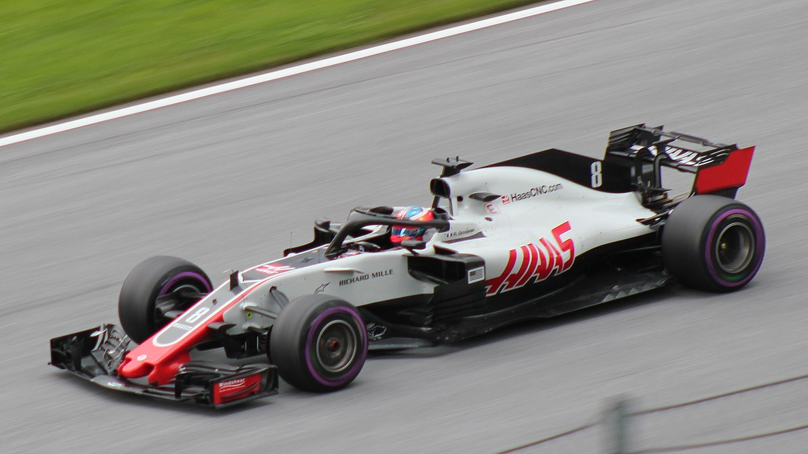
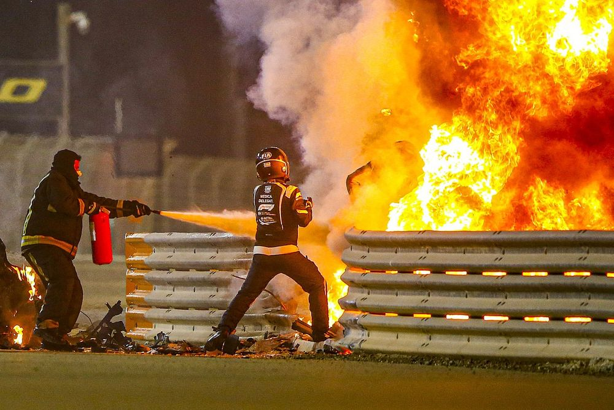
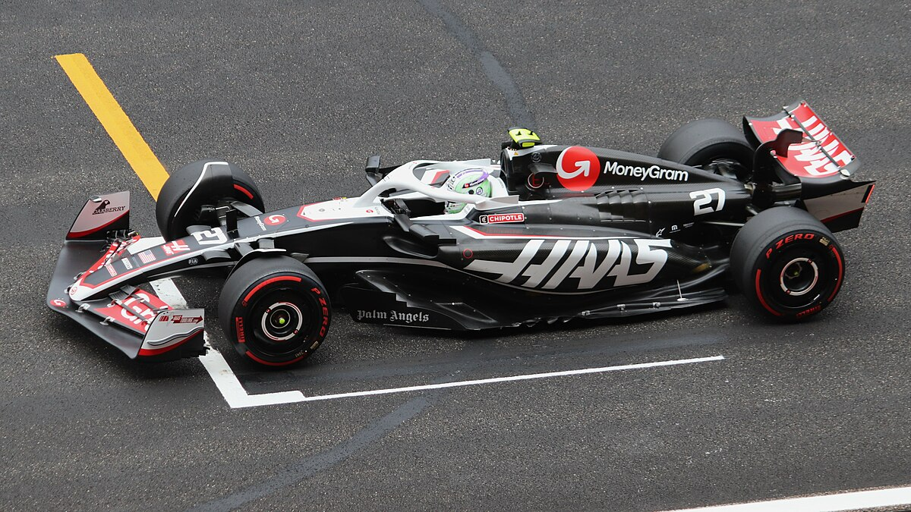

Haas

The History of Haas
Haas F1 Team was founded in 2014 by NASCAR Cup Series team owner Gene Haas and they made they debut in the 2016 season with Guenther Steiner as team principal.
Not a bad start
The first 3 years weren't bad for Haas. In the first year with drivers Romain Grosjean and Esteban Gutierrez they finished 8th in the constructors. The next 2 year with Grosjean and Kevin Magnussen they finished 8th then 5th almost doubling they pionts from 2017 to 2018. To this day 2018 is still their best ever season.
Downfall and Bahrain Crash
After mush promise in the 2018 season the team took Rich Energy as a title sonsor for 2019 but due to th numerous legal issues they faced they terminated the deal with Haas. The team ended up finishing 9th with their worst ever points total. 2020 didn't go any better only ammassing 3 points. The most memerable part of theat year was the crash at the Bahrain Grand PRix where Grosjean hit the barriers at high speed causing his car to split in half and engulf in flames. Miraculously he survived with just burns to his hands which was good ofr showing the advancments in saftey but not good for the team who had a comletely ruined car and injured driver.
In 2020 there was a new driver line up involving Michael Schumcher's son and FIA Formula 2 winner Mick and their new sponsor Uralkali's son Nikita Mazepin. However this ended up beging their worst ever season finishing last in the championship with 0 points. They went on to finish 8th in 2022 and last in 2023.
Recent Success
In the 2024 season with a change of team principal and drivers Kevin Magnussen and Nico Hulkenberg they ammassed 58 finishing 7th in the standings. This year with Esteban Ocon and Ollie Bearman they are currently 6th so maybe the future of Haas is looking bright.
